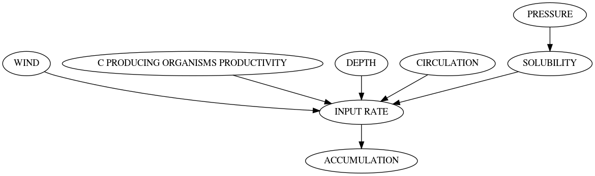
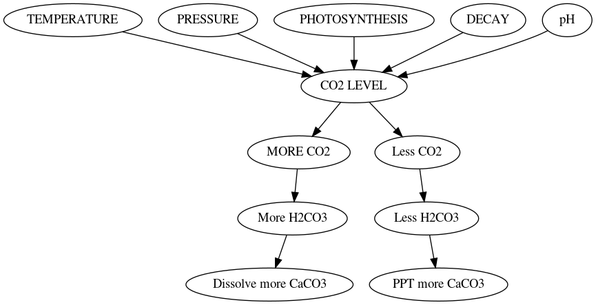
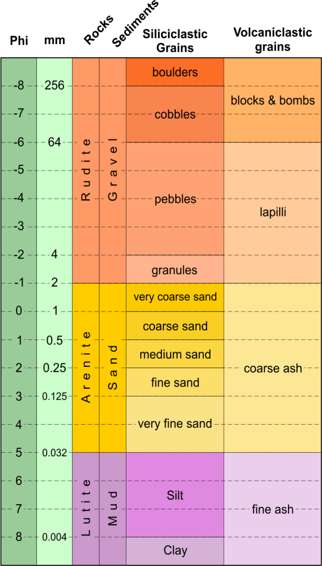
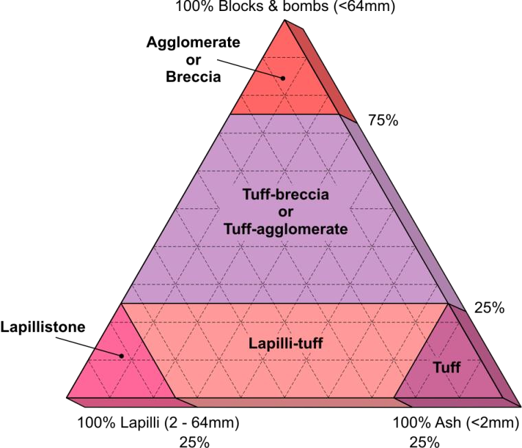
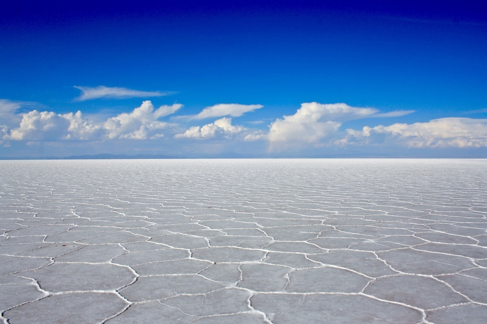
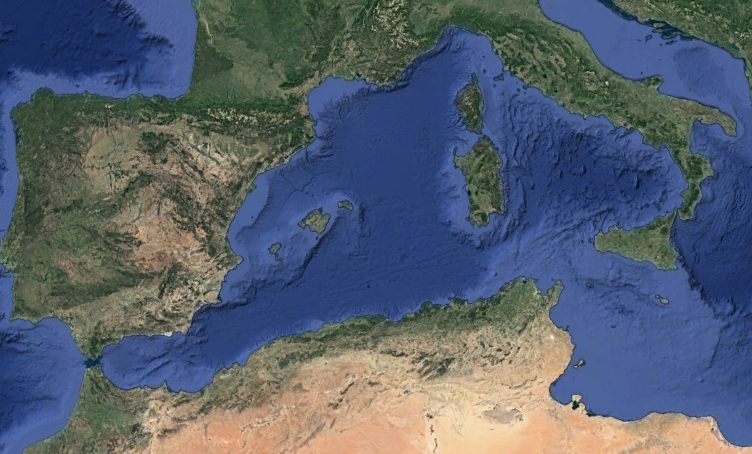

Deep Water
Created Wednesday 08 April 2020
@GEOLOGY @MRF @sedimentology @YEAR1
- @Pelagic = in the open ocean, far from sediment sources ≠ on continental shelf
- Sediment is very fine and suspended in air/ water.
- Material includes dust, clay, carbon, and bioclastic sediment (shells)
Terrigenous pelagic sediment
- Fine silt/ dust/ clay wind blown from deserts and suspended in the ocean. This is why red (oxidised) rocks can be in the ocean)
- Very slow accumulation rates
Biogenic pelagic sediments
Carbonate/ siliciclastic sediments are the most common right now, but this does change through time
Made of the hard parts of organisms left over when the soft bits decay away.
Begins as ooze before being lithified
Calcareous ooze accumulates 10x faster than terrigenous pelagic ooze
Siliceous @ooze comes from the remains of organisms made of @opal (hydrated quartz/ silica)
Distribution
Factors⬇️

↑ ocean depth = ↑ Pressure + ↓ Temperature → dissolve more
Calcite Compensation Depth
- The depth at which calcite will disolve and not aragonite (which is more unstable and needs shallower water)
- Calaite dissolves at 3000-4000 m
- Not consistent around the globe; depends on amount of and productivity.
- There is no calcareous ooze under the @calcite_compoensation_depth
Precipitation/ Solution
Solid calcium carbonate + carbonic acid = dissolved (cacium ions + bicarbonate)
The equlibrium of this equation determines the bahaviour of calcite/ aragonite

Hot springs cause minerals to ppt out
Volcaniclastics
@Volcaniclastic = any deposit that is minimum 25% from an active volcano.
Pumice/ scoria come from gaseous laval → vesicles → light & porous → they float
Volacniclastics have a different grsin size classification:

@phi_scale @udden_rentworth_scale
@volcanoes
- @Pyroclastic_fall / @Ashfall are ash clouds that have settled as a gravity driven lateral blanket sediment.
- Can be found 100s of kilometers away
- ≠ @pyroclastic_flow
- Pyroclatic Flows / @Ignimbrite (meaning 'fire cloud rock') are poorly sorted deposits from a fluid flow
- Pyroclastic Surges are driven by gas pressure ≠ gravity, and grain size reduces with distance from volacnic vent
Evaporites
@evaporite
- Water soluble minerals including Halite, Gypsum, Anhydrite and Calcite
- Rocks are named after the dominant mineral
- Form in situ in calm water, often in still water where water can't get in or out.
- Minerals are dissolved in a super-saturated solution → transported → ppt out
- Deposits are thicker in marine environments, but can happen on land, but non marine deposits are rich in @rare_earths. Big thick deposits with high concentrations are exploited for rare earths, like the Dead Sea.
Salt Flats
@salt_flats @salt

The @Messinian_salinity_crisis happened in the @Messinian . The Mediterranian dried up completely making it extremely saline and causing widespread death.
However, the empty basin allowed many animals to cross into southern Europe that would have otherwise been unable.
The opening of the @Strait_of_Gibraltar eventually re-flooded the basin. This is known as the @Zanclean_Flood

Ironstones
- @BIFs are exclusively precambrian and do not form today
- They are equivocal (no modern analogue)
- Iron rich sediments from when life began in water columns and oxidised
- Diagenetic
Coal
@coal is made of dead plant matter formed in shallow swamps and peat bogs
Lots of coal formed in the carboniferous:
- Lots of land near the equator
- No fungi in existance that ate wood
- Climate